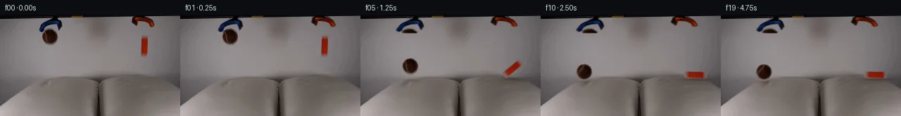

![首帧]()

Round 00
2026-11-04T18:59:45.212445+00:00像素候选变化代码 +319/−0inspection 更新
pixels db1c69c57d080807 · code 283c8844747f7ee1
查看本轮 generate.py 真实 diff
--- previous/generate.py
+++ current/generate.py
@@ -0,0 +1,319 @@
+"""Deterministic local pixel continuation; no model or rendering engine."""
+from pathlib import Path
+import json
+import math
+import re
+import base64
+import numpy as np
+from PIL import Image, ImageDraw
+import cv2
+from scipy.ndimage import gaussian_filter, map_coordinates, binary_dilation
+from artifact_io import save
+
+ROOT = Path(__file__).resolve().parent
+W, H = 256, 144
+YY, XX = np.mgrid[:H, :W].astype(np.float64)
+SOURCE = np.asarray(Image.open(ROOT / 'first_frame.png').convert('RGB'))
+F = SOURCE.astype(np.float64)
+
+
+def roi(x0, y0, x1, y1):
+ return (XX >= x0) & (XX < x1) & (YY >= y0) & (YY < y1)
+
+
+# All sprites and repaired wall pixels come from the supplied first frame.
+ball_cx, ball_cy = 70.8, 31.0
+ball_rx, ball_ry = 11.4, 11.6
+ball_dist = np.sqrt(((XX-ball_cx)/ball_rx)**2 + ((YY-ball_cy)/ball_ry)**2)
+ball_alpha = np.clip((1.045-ball_dist)*12.0, 0, 1)
+block_region = roi(198, 27, 212, 62)
+block_core = block_region & ((F[...,0]-F[...,2]) > 12)
+block_alpha = gaussian_filter(block_core.astype(float), .48)
+block_alpha[block_core & (F[...,0]-F[...,2] > 35)] = 1
+
+saturation = F.max(2)-F.min(2)
+blue_core = roi(53, 4, 90, 25) & ((saturation > 17) | (F.mean(2)<62))
+orange_core = roi(185, 1, 221, 19) & ((saturation > 17) | (F.mean(2)<50))
+blue_alpha = gaussian_filter(blue_core.astype(float), .48)
+orange_alpha = gaussian_filter(orange_core.astype(float), .48)
+blue_alpha[blue_core] = 1
+orange_alpha[orange_core] = 1
+# Keep entry points at the top of the frame fixed.
+blue_alpha[YY < 4] = 0
+orange_alpha[YY < 1] = 0
+alphas = [ball_alpha, block_alpha, blue_alpha, orange_alpha]
+remove = np.logical_or.reduce([a > .015 for a in alphas])
+remove = binary_dilation(remove, iterations=1)
+remove[YY < 1] = False
+remove[(YY < 4) & (XX < 100)] = False
+BASE = cv2.inpaint(SOURCE, (remove*255).astype(np.uint8), 5, cv2.INPAINT_TELEA).astype(float)
+# Premultiplied foreground pixels avoid copying an opaque rectangular wall patch.
+sprites = []
+for alpha in alphas:
+ # Raise opacity where necessary so recovered foreground channels stay valid.
+ amin = np.maximum(0, (1-F/np.maximum(BASE,1)).max(2))
+ alpha = np.where(alpha > .015, np.maximum(alpha, amin), 0)
+ premult = np.maximum(0, F-BASE*(1-alpha[...,None]))
+ premult[alpha == 0] = 0
+ sprites.append((premult, alpha))
+BALL, BLOCK, BLUE, ORANGE = sprites
+
+
+def sample(array, x, y):
+ if array.ndim == 2:
+ return map_coordinates(array, [y, x], order=1, mode='constant', cval=0, prefilter=False)
+ return np.stack([sample(array[...,c], x, y) for c in range(3)], axis=-1)
+
+
+def transformed(sprite, cx0, cy0, cx, cy, angle=0.0, sx=1., sy=1.):
+ co, si = math.cos(angle), math.sin(angle)
+ dx, dy = XX-cx, YY-cy
+ x = (co*dx+si*dy)/sx+cx0
+ y = (-si*dx+co*dy)/sy+cy0
+ premult, alpha = sprite
+ return sample(premult, x, y), sample(alpha, x, y)
+
+
+def over(background, layer):
+ rgb, alpha = layer
+ return rgb+background*(1-alpha[...,None])
+
+
+def ease(v):
+ v = np.clip(v,0.,1.)
+ return v*v*(3-2*v)
+
+
+def jaw_layer(sprite, pivot, t, yfixed):
… diff truncated; 232 more lines …